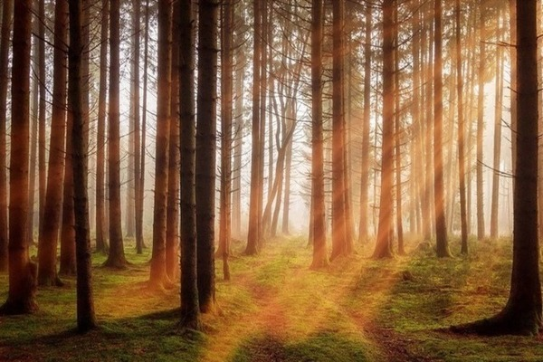
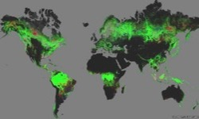
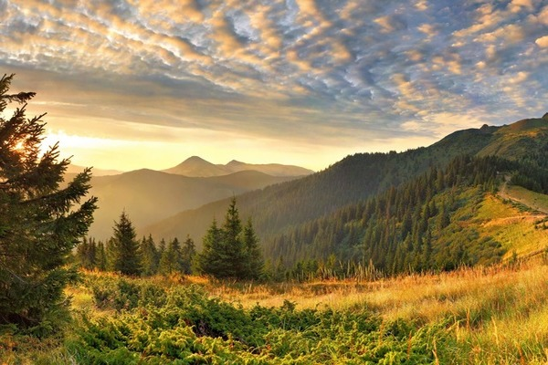
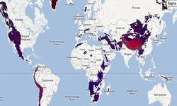
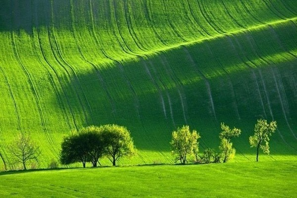
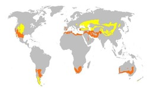
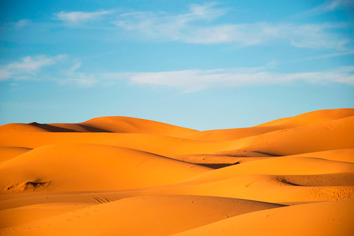
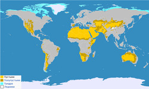
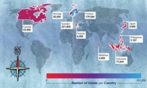

Интересные факты
- деревьев в мире примерно в шестьдесят раз больше, чем людей;
- во всём мире леса занимают почти треть всей суши;
- деревья растут всю свою долгую жизнь;
- в среднем одно дерево вырабатывает около сотни кубометров кислорода ежегодно;
- ежегодно Земля теряет почти сто миллионов деревьев
- около четверти всех лесов на планете — тайга;
- более 70 процентов территории Финляндии покрыты лесами, это самая богатая деревьями страна во всей Европе;
- самая дорогая в мире порода дерева — магахони.
Леса

Леса — экологическая система, в которой главной жизненной формой являются деревья. Составная часть природы. Можно рассматривать на разных уровнях. В глобальном масштабе — часть биосферы, в локальном — это может быть насаждение.
Леса на карте

Леса занимают около трети площади суши, площадь леса на Земле составляет 38 млн км². Из них 264 млн га, или 7 %, посажены человеком. К началу XXI века человек уничтожил около 50 % площадей лесов.
Распределение лесов по странам мира: Россия — 809 млн га., Бразилия — 520, Канада — 310, США — 304, Китай — 207, Демократическая республика Конго — 154, прочие — 1347 млн га.
Интересные факты
- если поставить сотню самых высоких гор нашей планеты друг на друга, получится вершина высотой в 754,5 км;
- самая высокая вершина на Земле — Джомолунгма, высотой 8848 метров;
- самые высокие горы не на Земле, расположенная на Марсе гора Олимп имеет высоту от подножия до вершины в 21,2 километра, а общую высоту — 26 км;
- на Земле имеется более сотни гор высотой более 7200 метров, считая от уровня моря;
- высоко в горах иногда выпадает снег розового цвета;
- вершины подводных гор иногда представляют собой острова.
Горы

Горы — сильно расчленённые части суши, значительно, на 500 метров и более, приподнятые над прилегающими равнинами. От равнин отделены либо напрямую подножием склона, либо предгорьями.
Горы на карте

24 % земной поверхности приходится на горы. Горные системы занимают 64 % поверхности Азии, 36 % — Северной Америки, 25 % — Европы, 22 % — Южной Америки, 17 % — Австралии и 3 % — Африки. 10 % всех людей живёт на территории гор. В горах берёт своё начало большинство рек Земли. По характеру вершины выделяют пикообразные, куполообразные, платообразные и другие горы.
Интересные факты
- луга являются естественной средой обитания многих организмов, растительность, включая кустарники и разнотравье — служит своеобразной ловушкой для осадков, регулирует фильтрацию земли;
- степи распространены на всех континентах, за исключением Антарктиды;
- в разных странах степи имеют свое название, в Австралии и Африке — это саванна, в Южной Америке — льянос и пампа, или пампасы, в Северной Америке — прерии, а в Новой Зеландии — туссоки;
- типы лугов: лугостепь, суходольный луг, низинный, болотистый, заливной, субальпийский, альпийский.
Луга и степи

Луга — типы зональной растительности, характеризующиеся господством многолетних травянистых растений в условиях достаточного или избыточного увлажнения. Степь — равнина, поросшая травянистой растительностью, в умеренных и субтропических зонах Северного и Южного полушарий. Характерной особенностью степей является отсутствие или очень малое количество деревьев
Степи на карте

Степи распространены на всех континентах, кроме Антарктиды. В Евразии наибольшие площади степей находятся на территории России, Казахстана, Украины и Монголии. В горах образует высотный пояс (горная степь); на равнинах — природную зону, расположенную между лесостепной зоной на севере и полупустынной зоной на юге. Средние температуры зимних месяцев — от 0ºС до −20ºС, летних — от +20ºС до +25ºС.
Интересные факты
- в раскалённом песке в пустыне днём вполне можно испечь куриное яйцо;
- пустыни занимают примерно одну пятую поверхности суши на Земле, причём половина этой площади приходится на сухие пустыни Антарктиды;
- в пустыне Сахара однажды фиксировалась температура воздуха в +58 градусов;
- пустыни непрерывно движутся, дюны перемещаются в среднем со скоростью 7-10 метров в год;
- некоторые дюны в песчаных пустынях достигают двухсот-трёхсот метров в высоту;
- пустыни непрерывно движутся, дюны перемещаются в среднем со скоростью 7-10 метров в год.
Пустыни

Пустыни — природная зона, характеризующаяся преимущественно или полностью равнинной поверхностью, разреженностью или отсутствием флоры и специфической фауной. Различают песчаные, каменистые, глинистые, солончаковые пустыни, а также арктические.
Пустыни на карте

Всего пустыни занимают в мире 21 млн км² или около 14 % на поверхности суши. С полярными пустынями Антарктиды и Арктики более 20 %. Большинство пустынь сформировались на геологических платформах и занимают древнейшие участки суши. Пустыни на территории Азии, Африки и Австралии расположены на высотах 200—600 метров над уровнем моря, в Центральной Африке и Северной Америке — 1000.
Интересные факты
- самым большим островом считается Гренландия, площадь острова составляет 2 166 086 квадратных километров;
- в 19 веке англичане присвоили острову статус корабля, так как в государственной казне не нашлось денег для его содержания, его переименовали в «Корабль Её Величества «Вознесение», стоящий на рейде»;
- в сербском и хорватском языках встречаются слова без гласных звуков, напрмер, остров Крк;
- на острове Борнео растет самый большой в мире цветок – Раффлезия, запах которого, по словам местных жителей, похож на запах разлагающегося трупа.
Острова
Острова — участки суши (обычно естественного происхождения) в океане, море, озере или на реке, окружённые со всех сторон водой и постоянно возвышающиеся над водой даже в период наибольшего прилива.
Острова на карте

Всего, в мире насчитывается около 500 000 островов. Основное количество островов расположено у побережья 9 стран мира — Япония, Филиппины, Индонезия, Мальдивы, Греция, Швеция, Финляндия, Норвегия и Канада. В целом, около 25% стран имеют собственные острова. Однако, только 2% островов имеют постоянных жителей. 490 000 островов остаются все еще незаселенными.
{kind=link}
{kind=link}
{kind=link}
{kind=link}
{kind=link}